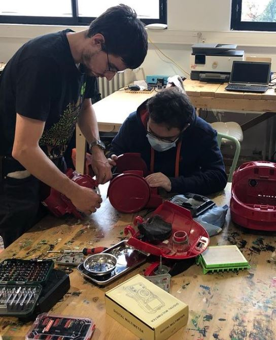

Repair café
 Un Repair Café est un événement participatif et convivial. Son
principal objectif est d’éviter de jeter les objets du quotidien qui
peuvent encore servir, en les réparant ou en apprenant à les
réparer.
Les étudiants qui vous accueillent (organisateurs et réparateurs)
ont en commun la curiosité, la volonté d’apprendre et de devenir
plus autonomes. L’échange, la transmission de savoir-faire, la
solidarité et la préservation de l’environnement sont également des
valeurs qui les animent.
Lors des premières édition, un cuiseur à riz a pu retourner en cuisine, une guirlande a retrouvé son éclat, des écouteurs se sont remis à vibrer…
La charte ci dessous permet à tous de comprendre le fonctionnement de cet évenement:
Un Repair Café est un événement participatif et convivial. Son
principal objectif est d’éviter de jeter les objets du quotidien qui
peuvent encore servir, en les réparant ou en apprenant à les
réparer.
Les étudiants qui vous accueillent (organisateurs et réparateurs)
ont en commun la curiosité, la volonté d’apprendre et de devenir
plus autonomes. L’échange, la transmission de savoir-faire, la
solidarité et la préservation de l’environnement sont également des
valeurs qui les animent.
Lors des premières édition, un cuiseur à riz a pu retourner en cuisine, une guirlande a retrouvé son éclat, des écouteurs se sont remis à vibrer…
La charte ci dessous permet à tous de comprendre le fonctionnement de cet évenement:
Organisation
Après s'être inscrit via le formulaire, rendez vous à l'I-Lab à l'heure convenu. Vous serez pris en charge par une équipe de réparateurs qui va passer avec vous 40 minutes maximum sur votre objet. Pensez à prendre tous les accessoires utiles à la réparation (cordon d'alimentation, batterie, mode d'emploi…). Suivant l'affluence, il est possible que vous ayez à attendre, une zone de convivialité est prévue à cette effet.
Inscription
Gratuité
Les activités au Repair Café sont effectuées gratuitement par nos réparateurs bénévoles.
Participation des visiteurs
Les visiteurs restent présents et participent à la réparation autant que possible. Ils aident ou réparent avec les conseils d’un bénévole, dans le but d’ancrer le réflexe de réparation.
Un seul objet
Pour permettre au plus grand nombre de participer, les visiteurs ne peuvent présenter qu’un seul objet à réparer. Une forte affluence peut nous conduire à anticiper la fermeture de l’évènement.

Pièces de rechange
Repair Café ne s’engage pas à fournir les pièces détachées ou consommables nécessaires à la réparation. La fourniture de la pièce de rechange est à la charge du visiteur qui pourra venir la faire remplacer lors d’un prochain événement.
Engagement
Les réparateurs font de leur mieux pour remettre en état de bon fonctionnement les objets présentés sans obligation de résultat. Un objet non réparé ne sera pas systématiquement remonté. Les visiteurs seront alors responsables de son élimination appropriée.
Garantie
Les réparations effectuées dans le cadre des événements Repair Café ne donnent lieu à aucune garantie sur les objets réparés.
Responsabilité
Les réparateurs ne peuvent être tenue responsable des dommages occasionnés aux objets pendant et après l’événement.
Transactions en dehors de Repair Café
Les événements Repair Café ne peuvent être utilisés comme relais pour des transactions commerciales entre bénévoles et visiteurs.